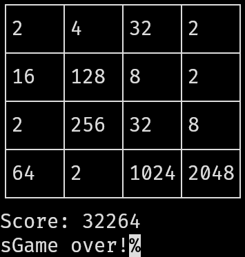

hs2048

In our introductory couse on programming, we had to code a 3x3 version of 2048 in F#, without numbers and without being allowed to use matrices. I found this very frustrating and decided to learn Haskell in a week and code a more complete version of 2048 in Haskell. This was my first real project in Haskell, and I later on added a TCP server to it to allow other programs to interact with the game.
At the time that I wrote this, I didn’t know how to write stateful code in Haskell and therefore the game is acutally stateless, the score is a heuristic based on the current board state, a funny consequence of this is that the blocks are internally represented by their logarithm to the base 2, and the score is calculated by the following function:
recurrentScore :: Maybe Int -> Int
recurrentScore Nothing = 0
-- The additional term is to account for the randomly spawned 4s
recurrentScore (Just n) = 2 ^ n * (n - 1) - quot (2 ^ (n + 1)) 11
-- map recurrentScore to each element of the grid and sum the result
scoreGrid :: Grid -> Int
scoreGrid grid = sum $ map (sum . map recurrentScore) grid